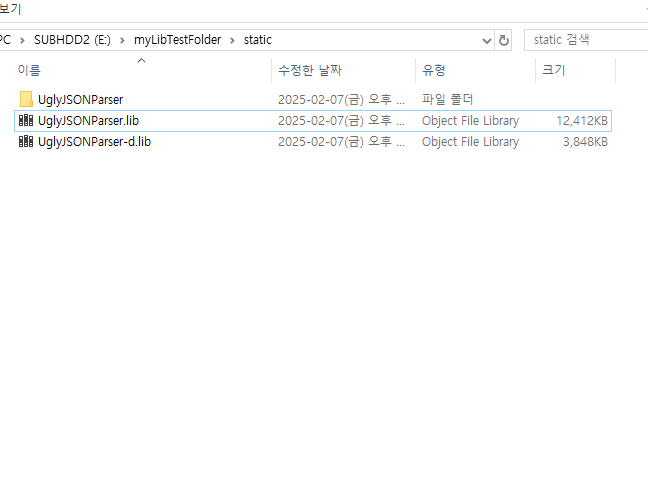
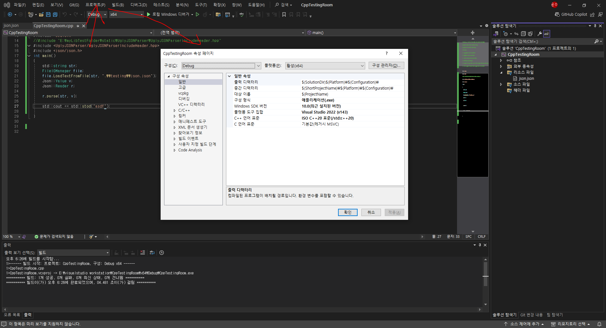
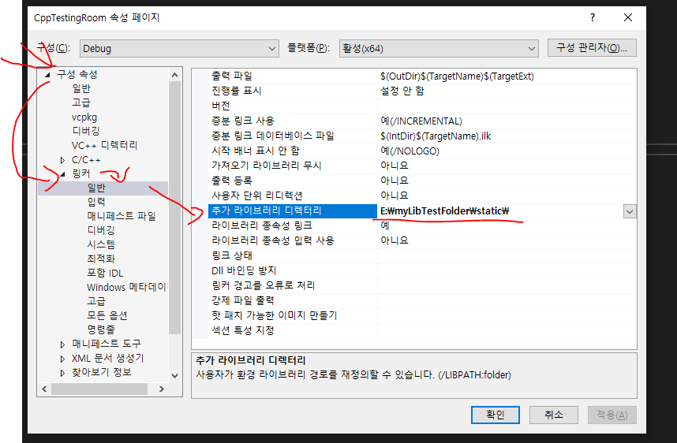
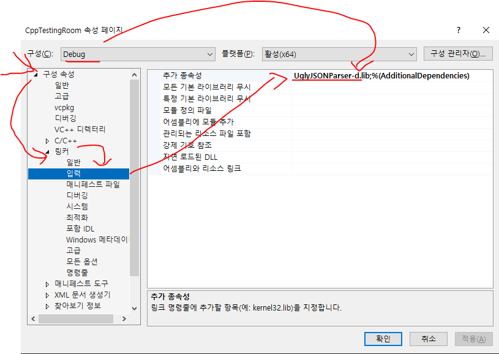
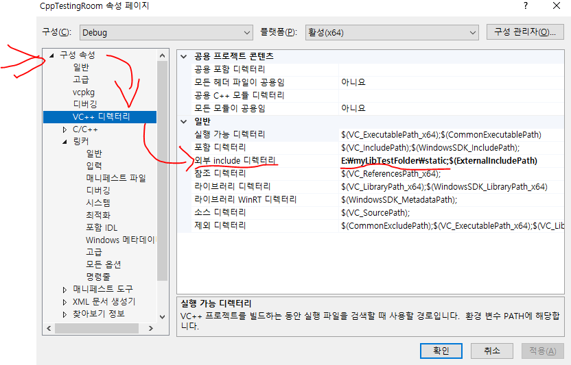

버전 : v1.0
요구하는 최소 c++ 버전 : c++ 20
플랫폼 도구 집합 : Visual Studio 2022 (v143)
Windows SDK 버전 : 10.0
런타임 라이브러리 : Release => MD , Debug => MDd
종류 : Release 구성용 => UglyJSONParser.lib , Debug 구성용 => UglyJSONParser-d.lib
스레드 안전 : 보장되지 않음.
//최소 다시 빌드 가능 이것도 y/n 별로 다 빌드해두기 //이거 CMake를 해보자. 이거 해두는게 좋을거같다.
사용이 어렵지 않다.
복잡하게 파일을 불러오고, 그걸 저장하고, 그걸 파서에 돌리고 할 필요가 없습니다.
단순히 RootNode와 읽을 파일의 주소를 파서에 입력하면, JSONTree를 RootNode에 빌드해줍니다.
UglyJSONParser의 lib파일들과 헤더 파일이 모여있는 Include폴더의 UglyJSONParser 폴더를 다운로드 하여 자신이 원하는 장소에 저장해둡니다.
아마 Releases 탭에서 편하게 두 파일을 다운로드 받을 수 있을겁니다. 이때, Include폴더와 lib들이 모여있는 폴더의 위치는 달라도 됩니다.

이 라이브러리를 사용할 프로젝트를 열고, 프로젝트 속성을 엽니다.

구성 속성 -> 링커 -> 일반탭의 추가 라이브러리 디렉터리 항목에 조금 전 lib이 있는 폴더의 위치를 복사 및 붙여넣기 합니다.

구성 속성 -> 링커 -> 입력탭의 추가 종속성 항목에 현제 솔루션의 구성에 알맞은 lib파일의 이름을 적어줍니다.
Release 구성이면 UglyJSONParser.lib을, Debug구성이면 UglyJSONParser-d.lib을 적어줍니다.

구성 속성 -> VC++ 디렉터리의 외부 include 디렉터리에 헤더파일이 모여있는 폴더의 주소를 적어줍니다.
이 항목에서 적어주는 폴더의 주소는 #include <> 의 검색 시작 주소이다.
만약 C:\a\b에 헤더가 있고, 저 항목에 C:\a 를 적어주었다면, #include \

(다른 파일로 분리)
(다른 파일로 분리)
json.json
{
"Hello": "World!",
"Int": 1234,
"float": 1.234000,
"exponent": 1000,
"array": [ 1, 2, 3, true, false ],
"object": { "key": "value" },
"null": null,
"nose": -3000
}
#include <UglyJSONParser/UglyJSONParserIncludeHeader.hpp>
#include <iostream>
int main()
{
//필요한 변수들 선언
UglyJSONParser::JSONParser parser;
UglyJSONParser::RootNode root;
//json파일에서 파일을 읽어와 root노드에 JSONTree 생성
parser.BuildJSONTreeFromFile(".\\testing\\json.json", root);
//JSONTree에서 값을 읽어오기
std::cout << "Hello : " << root["Hello"].AsString() << '\n';
std::cout << "Int : " << root["Int"].AsInt() << '\n';
std::cout << "float AsDouble : " << root["float"].AsDouble() << '\n';
std::cout << "float AsInt : " << root["float"].AsInt() << '\n';
std::cout << "Array 0 : " << root["array"][0].AsInt() << '\n';
std::cout << "Array 3 : " << root["array"][3].AsBool() << '\n';
std::cout << "Array 4 : " << root["array"][4].AsBool() << '\n';
std::cout << "Object Key : " << root["object"]["key"].AsString() << '\n';
std::cout << "nose : " << root["nose"].AsInt() << '\n';
//값 수정
std::cout << "before : Hello : " << root["Hello"].AsString() << '\n';
root["Hello"] = "and O'men";
std::cout << "after : Hello : " << root["Hello"].AsString() << '\n';
//파일에 JSONTree의 값 저장
parser.SaveJSONTreeToFile(".\\testing\\json.json", root);
return 0;
}
int main() { //필요한 변수들 선언 UglyJSONParser::JSONParser parser; UglyJSONParser::RootNode root; std::string json = "{\"key\":\"value and this is \\"value\\"\", \"arr\" : [1,1e+4,1.234]}";
//string을 기반으로 JSONTree 생성
parser.BuildJSONTreeFromString(json, root);
//값 읽어오기
std::cout << "key : " << root["key"].AsString() << '\n';
std::cout << "arr 0 : " << root["arr"][0].AsInt() << '\n';
std::cout << "arr 1 : " << root["arr"][1].AsInt() << '\n';
std::cout << "arr 2 : " << root["arr"][2].AsDouble() << '\n';
return 0;
} ```
주의 : 이 문단은 제작자가 발견하지 못한 이슈에 대한 해결법은 작성되어있지 않습니다. 만약 새로운 이슈를 발견한다면 제작자에게 연락하거나, 해당 리포지토리에 new issue를 해준다면, 가능한 한 빠른 시일 내로 업데이트 될것입니다.
다음을 확인해보십시오:
(아직 준비되지 않았습니다.)
제작자: nuke1115
연락처:
Discord : yellowsticker_ / 노란딱지#7701
v1.0
License : MIT License
개인용도 이용, 상업용도 이용 모두 무료입니다.